ScottPlot Cookbook
⚠️ Documentation is version-specific: This page was generated forScottPlot 4.1.4-beta
Additional documentation and more version-specific cookbooks are on the ScottPlot Website
Quickstart
Scatter Plot - Scatter plots have paired X/Y points.
Signal Plot - Signal plots have evenly spaced Y points. Signal plots are very fast and can interactively display millions of data points. There are many different types of plottable objects, each serving a different purpose.
Axis Labels and Limits - Axis labels and limits can be customized
Manually Add a Plottable - You can create a plot manually, then add it to the plot with Add(). This allows you to create custom plot types and add them to the plot.
Clear plottables - Call Clear() to remove all plottables from the plot. Overloads of Clear() allow you to remote one type of plottable, or a specific plottable.
Axis and Ticks
Axis Customizations - Axes can be customized different ways. Axis labels and colors are the most common types of customizations.
Disable Grid - Visibility of primary X and Y grids can be set using a single method.
Disable Vertical Grid - Grid line visibility can be controlled for each axis individually. Use this to selectively enable grid lines only for the axes of interest. Keep in mind that vertical grid lines are controlled by horizontal axes.
Grid Style - Common grid line configurations are available.
Disable X Ticks - Ticks can be hidden on a single axis.
Rotated X Ticks - Horizontal tick labels can be rotated as desired.
Rotated Y Ticks - Vertical tick labels can be rotated as desired.
Plotting DateTime Data - This example shows how to display DateTime data on the horizontal axis. Use DateTime.ToOADate() to convert DateTime[] to double[], plot the data, then tell the axis to format tick labels as dates.
 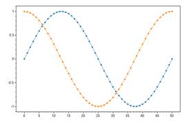
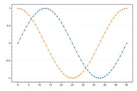
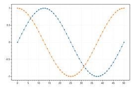
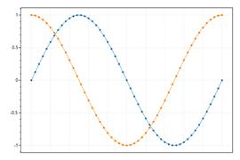
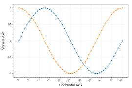
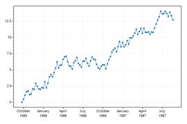
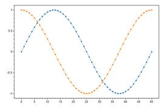
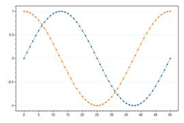
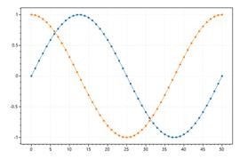
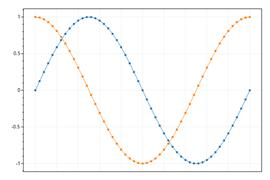
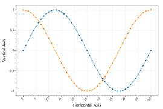
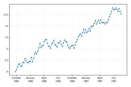
Advanced Axis Features
Advanced Grid Customization - Grid lines can be extensively customized using various configuration methods.
Numeric Format String - Tick labels can be converted to text using a custom format string.
Manual Tick Labels - Tick positions and labels can be defined manually.
NonLinear Tick Spacing - Plot data on regular cartesian space then manually control axis labels to give the appearance of non-linear spacing between points.
Descending Ticks - ScottPlot will always display data where X values ascend from left to right. To simulate an inverted axis (where numbers decrease from left to right) plot data in the negative space, then invert the sign of tick labels.
Defined Tick Spacing - The space between tick marks can be manually defined by setting the grid spacing.
Tick Label Culture - Large numbers and dates are formatted differently for different cultures. Hungarian uses spaces to separate large numbers and periods to separate fields in dates.
Custom Tick Label Culture - SetCulture() as arguments to let the user manually define formatting strings which will be used globally to change how numbers and dates are formatted.
Multiplier Notation - Multiplier notation keeps tick labels small when plotting large data values.
Offset Notation - Offset notation keeps tick labels small when plotting large data values that are close together.
Defined DateTime Spacing - This example shows how to use a fixed inter-tick distance for a DateTime axis
Log Scale - ScottPlot will only display data on a linear 2D plane, however you can log-transform data before plotting it to give the appearance of log scales. Customizing tick options for log-spaced minor ticks further improves appearance of these graphs.
Ruler mode - Ruler mode is an alternative way to display axis ticks. It draws long ticks and offsets the tick labels to give the appearance of a ruler.
Polar Coordinates - A helper function converts radius and theta arrays into Cartesian coordinates suitable for plotting with traditioanl plot types.
 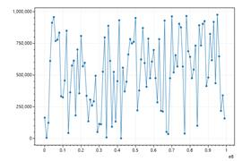
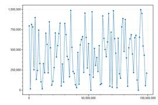
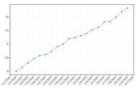
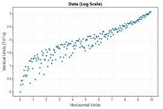
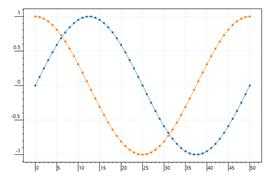
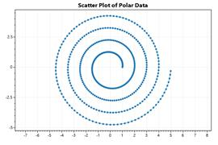
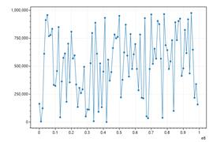
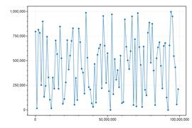
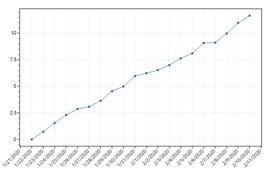
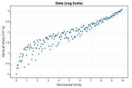
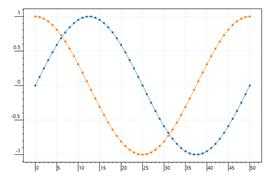
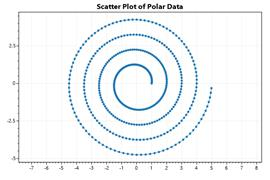
Multi-Axis
Primary Axes - Plots always have 4 fundamental axes available to work with. Primary axes (XAxis and YAxis) are axis index 0. Secondary axes (XAxis2 and YAxis2) are axis index 1.By default primary axes are totally visible, and secondary axes have ticks hidden and no label. Sometimes the top axis (XAxis2) is given a label to simulate a plot title.
Additional Y Axis - Additional axes can be added on any edge. Additional axes stack away from the plot area.
Right Y Axis - This example shows how to display a Y axis only on the right side.
Axis Visibility - Visibility of axes can be toggled. In this example an additional Y axis is added but the primary Y axis is hidden. The result is a plot that appears to only have one Y axis.
Statistics
Histogram - The Histogram class makes it easy to get binned population information.
CPH - This example demonstrates how to plot a cumulative probability histogram (CPH) to compare the distribution of two datasets.
Linear Regression - A regression module is available to simplify the act of creating a linear regression line fitted to the data.
Nth Order Statistics - The Nth order statistic of a set is the Nth smallest value of the set (indexed from 1).
Percentiles - Percentiles are a good tool to analyze the distribution of your data and filter out extreme values.
Quantiles - A q-Quantile is a generalization of quartiles and percentiles to any number of buckets.
Plottable: Annotation
Figure Annotations - Annotations are labels placed at a X/Y location on the figure (not coordinates of the data area). Unlike the Text plottable, annotations do not move as the axes are adjusted.
Plottable: Arrow
Arrows - Arrows point to specific locations on the plot. Arrows are actually just scatter plots with two points and an arrowhead.
Plottable: Axis Line and Span
Axis Line - An axis line marks a position on an axis. Axis lines extend to positive and negative infinity on the other axis.
Draggable Axis Lines - In GUI environments, axis lines can be draggable and moved with the mouse. Drag limits define the boundaries the lines can be dragged.
Axis Span - Axis spans shade a portion of one axis. Axis spans extend to negative and positive infinity on the other axis.
Draggable Axis Span - Axis spans can be dragged using the mouse. Drag limits are boundaries over which the edges of spans cannot cross.
 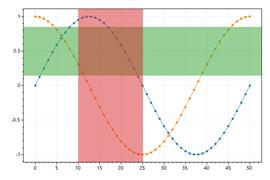
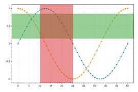

Plottable: Bar Graph
Bar Graph - A simple bar graph can be created from a series of values. By default values are palced at X positions 0, 1, 2, etc.
Bar Graph with Defined Positions - Horizontal positions for each bar can be defined manually. If you define bar positions, you will probably want to define the bar width as well.
Bar Graph with Error Bars - Errorbars can be added to any bar graph.
Stacked Bar Graphs - Bars can be overlapped to give the appearance of stacking.
Values Above Bars - The value of each bar can be displayed above it.
Bar Fill Pattern - Bar graph fill pattern can be customized.
Horizontal Bar Graph - Bar graphs are typically displayed as columns, but it's possible to show bars as rows.
Grouped Bar Graphs - By customizing positions of multiple bar plots you can achieve the appearance of grouped bar graphs. The AddBarGroups() method is designed to simplify this process. More advanced grouping and bar plot styling is possible using the Population plot type.
Bars with Y Offsets - By default bar graphs start at 0, but this does not have to be the case. Y offsets can be defined for each bar. When Y offsets are used, values represent the height of the bars (relative to their offsets).
Negative Bar Colors - Bars with negative values can be colored differently than positive ones.
Waterfall Bar Graph - Waterfall bar graphs use bars to represent changes in value from the previous level. This style graph can be created by offseting each bar by the sum of all bars preceeding it. This effect is similar to financial plots (OHLC and Candlestick) which are described in another section.
Plottable: Colorbar
Colorbar - A colorbar displays a colormap beside the data area. Colorbars are typically added to plots containing heatmaps.
Colorbar for Colormap - By default colorbars use the Viridis colormap, but this behavior can be customized and many colormaps are available.
Colorbar Ticks - Tick marks can be added to colorbars. Each tick is described by a position (a fraction of the distance from the bottom to the top) and a string (the tick label).
Plottable: Fill
Fill Under Curve - Fill methods help to create semitransparent polygons to fill the area under a curve. This can be used to give the appearance of shading under a scatter plot, even though the plottable created here is a polygon with optional edge color and fill color.
Fill Above and Below - Sometimes you want to share the area under a curve, but change its color depending on which side of the baseline value it is. There's a helper method to make this easier.
Fill Between Curves - Given two curves, a polygon can be created to give the appearance of shading between them. Here we will display two scatter plots, then create a polygon to fill the region between them.
Plottable: Finance
Candlestick Chart - ScottPlot can draw some financial indicators on plots in X/Y space, but users looking to develop robust financial charts should probably look at other libraries designed specifically for financial charting. The biggest limitations are (1) lack of mouse interaction and (2) the horizontal axis is strictly numeric Cartesian space and is not ideal for plotting dates. That said, some financial charting is possible with ScottPlot, and this cookbook demonstrates common use cases.
OHLC Chart - OHLC charts are an alternative to candlestick charts. They show high and low prices as a vertical line, and indicate open and close prices with little ticks to the left and to the right.
Using a DateTime Axis - You probably never want to do this... but OHLCs have an X value you can customize to be a DateTime (converted to a double using DateTime.ToOATime()). The advantage is that you can use the native DateTime axis support on the horizontal axis. The disadvantage is that gaps in time appear as gaps in the candlesticks. Weekends without trading will appear as gaps. The alternative to this method is to plot a series of OHLCs using sequential numbers, then manually define the axis tick labels.
Candlesticks with Custom Tick Labels - A better way to represent time on the horizontal axis is to use traditional Cartesian coordinates so each candlestick is placed at X positions (0, 1, 2, etc.), then manually define the locations and label text of important positions on the plot. This is clunky, but possible. This inelegance is why financial charting is probably best done with real financial charting libraries, not a scientific charting library like ScottPlot...
Simple Moving Average (SMA) - A simple moving average (SMA) technical indicator can be calculated and drawn as a scatter plot.
Bollinger Bands - Bollinger bands are a common technical indicator that show the average +/- two times the standard deviation of a given time range preceeding it.
Price on Right - Newer data appears on the ride side of the chart so financial charts are often displayed with the vertical axis label on the right side as well. This is possible by disabling the left vertical axis (YAxis) and enabling the right one (YAxis2)
Plottable: Function
Function - Function plots are defined by a function (not X/Y data points) so the curve is continuous and can be zoomed in and out infinitely
Plottable: Heatmap
Heatmap Quickstart - Heatmaps display a 2D array using a colormap.
Heatmap with Colorbar - Colorbars are often added when heatmaps are used.
Heatmap Image - Image data can be plotted using the heatmap plot type.
2D Waveform - This example demonstrates a heatmap with 1000 tiles
Colormap - Viridis is the default colormap, but several alternatives are available.
Scale Limits - Heatmap colormap scale can use a defined min/max value.
Interpolation by Density - Heatmaps can be created from random 2D data points using the count within a square of fixed size.
Gaussian Interpolation - Heatmaps can be created from 2D data points using bilinear interpolation with Gaussian weighting. This option results in a heatmap with a standard deviation of 4.
Plottable: Image
Image Quickstart - The Image plottable places a Bitmap at a location in X/Y space.The image's position will move in space as the axes move, but the size of the bitmap will always be the same (matched to the display resolution).
Image Alignment - By default the X/Y coordinates define the upper left position of the image, but alignment can be customized.
Image Rotation - Images can be rotated, but rotation is always relative to the upper left corner.
Image Border - The borders of images can be customized.
Plottable: Pie
Pie Chart - A pie chart illustrates numerical proportions as slices of a circle.
Exploded Pie Chart - Exploded pie charts have a bit of space between their slices.
Donut Chart - Donut plots are pie charts with a hollow center.
Donut with Text - Custom text can be displayed in the center of a donut chart. Notice too how the colors of each slice are customized in this example.
Slice Values - The value of each slice can be displayed at its center.
Slice Percentages - The percentage of each slice can be displayed at its center.
Slice Labels - The label for each slice can be displayed at its center.
Slices in Legend - Slices can be labeled in the legend.
Label Everything - Slices can labeled with values, percentages, and lables, with a legend.
Custom Slice Labels - Custom slice labels can be used to display values using custom formats
Plottable: Point
Point - You can add a single point to the plot. A point is really a scatter plot with a single X/Y coordinate.
Plottable: Polygon
Polygon Quickstart - Polygons are 2D shapes made from pairs of X/Y points. The last point connects back to the first point, forming a closed shape. Polygons can be optionally outlined and optionally filled. Colors with semitransparency are especially useful for polygons.
Filled Line Plot - Polygons can be used to create 2D shapes resembling filled line plots. When mixed with semitransprent fills, these can be useful for displaying data.
Stacked Filled Line Plot - A stacked filled line plot effect can be achieved by overlapping polygons.
Many Polygons - Special rendering optimizations are available to display a large number of polygons.
Plottable: Population
Population Plot - The population plot makes it easy to display populations as bar graphs, box-and-whisker plots, scattered values, or box plots and data points side-by-side. The population plot is different than using a box plot with an error bar in that you pass your original data into the population plot and it determines the standard deviation, standard error, quartiles, mean, median, outliers, etc., and you get to determine how to display these values.
Multiple Populations - Multiple populations can be assembled into an array and plotted as a single group.
Multiple Series - Multiple series of population groups can be plotted Here each group is clustered on the horizontal axis, and each series is given a different color and appears in the legend.
Advanced Population Styling - Populations can be displayed many different ways. Scatter values can be displayed on either side of the bar or bar. Populations can be shown as bar graphs instead of box plots. Public fields allow many additional customizations.
Plottable: Radar
Radar - A radar chart concisely displays multiple values. Radar plots are also called a spider charts or star charts.
Straight Axis Lines - Change the axis type to polygon to display radar charts with straight lines.
No Axis Lines - A radar chart can have no drawn axis as well.
Labeled Categories - Category labels can be displayed on the radar chart.
Labeled Values - Labels can be displayed on the arms of the radar chart.
Independent Axis Scaling - Axis scaling can be independent, allowing values for each category to be displayed using a different scale. When independent axis mode is enabled, axis limits are automatically adjusted to fit the range of the data.
Defined Axis Limits - Radar charts with independent axis limits use scales fitted to the data by default, but scaling can be controlled by defining the maximum value for each axis.

Plottable: Scale Bar
Scale Bar - An L-shaped scalebar can be added in the corner of any plot. Set the vertical or horizontal sizer to zero and the scale bar will only span one dimension.
Horizontal Scale Bar - Set the vertical or horizontal sizer to zero and the scale bar will only span one dimension.
Plottable: Scatter Plot
Scatter Plot Quickstart - Scatter plots are best for small numbers of paired X/Y data points. For evenly-spaced data points Signal is much faster.
Custom markers - Markers can be customized using optional arguments and public fields.
All marker shapes - Legend indicates names of all available marker shapes
Custom lines - Line color, size, and style can be customized. Setting markerSize to 0 prevents markers from being rendered.
Random X/Y Points - X data for scatter plots does not have to be evenly spaced, making scatter plots are ideal for displaying random data like this.
Scatter Plot with Errorbars - An array of values can be supplied for error bars and redering options can be customized as desired

Plottable: Signal Plot
Signal Plot Quickstart - Signal plots are ideal for evenly-spaced data with thousands or millions of points.
Speed Test - Compare the speed to the same data plotted as a scatter plot.
Styled Signal Plot - Signal plots can be styled using public fields. Signal plots can also be offset by a defined X or Y amount.
5 Million Points - Signal plots with millions of points can be interacted with in real time.
Display data density - When plotting extremely high density data, you can't always see the trends underneath all those overlapping data points. If you send an array of colors to PlotSignal(), it will use those colors to display density.
Display first N points - When plotting live data it is useful to allocate a large array in memory then fill it with values as they come in. By setting the maxRenderIndex property of a scatter plot to can prevent rendering the end of the array (which is probably filled with zeros).
Plot a Range of Points - It is sometimes useful to only display values within a range of the source data array.
Fill Below - Signal plots can be filled below with a solid color.
Gradient Fill Below - Signal plots can be filled below using a color gradient.
Gradient Fill Above - Signal plots can be filled above using a color gradient.
Fill Above and Below - Signal plots can be filled above and below
Gradient Fill Above and Below - Gradients can be used to fill above and below.
Plottable: SignalConst
SignalConst Quickstart - SignalConst plots pre-processes data to render much faster than Signal plots. Pre-processing takes a little time up-front and requires 4x the memory of Signal.
Plottable: SignalXY
SignalXY Quickstart - SignalXY is a speed-optimized plot for displaying vaues (Ys) with unevenly-spaced positions (Xs) that are in ascending order. If your data is evenly-spaced, Signal and SignalConst is faster.
Signal Data with Gaps - Signal with defined Xs that contain gaps
Different Densities - Signal with mised low and high density data

Plottable: SignalXYConst
SignalConst with X and Y data - SignalXYConst is a speed-optimized plot for displaying vaues (Ys) with unevenly-spaced positions (Xs) that are in ascending order. If your data is evenly-spaced, Signal and SignalConst is faster.
Different data types for xs and ys - SignalXYConst with (int)Xs and (float)Ys arrays
Plottable: Text
Text - The Text plottable displays a string at an X/Y coordinate in unit space. Unlike the Annotation plottable, text moves when the axes are adjusted.
Text Alignment and Rotation - Advanced options are available to customize rotation and alignment. Note that if rotation is used, alignment is ignored.
Custom Fonts - You can pass in a Font to further customize font options
Plottable: Tooltip
Tooltip Quickstart - Tooltips are annotations that point to an X/Y coordinate on the plot
Tooltip Font - Tooltips fonts can be customized
Tooltip Colors - Tooltips border and fill styles can be customized
Plottable: Vector Field
Quickstart - A vector field can be useful to show data explained by differential equations
Angle and Magnitude - This example demonstrates how to define vectors according to a given angle and magnitude.
Custom Colormap - A colormap can be supplied to color arrows according to their magnitude
Custom Scale Factor - A custom scale factor can adjust the length of the arrows.
Style
Default - Customize many plot features using style presets
Control - Customize many plot features using style presets
Blue1 - Customize many plot features using style presets
Blue2 - Customize many plot features using style presets
Blue3 - Customize many plot features using style presets
Light1 - Customize many plot features using style presets
Light2 - Customize many plot features using style presets
Gray1 - Customize many plot features using style presets
Gray2 - Customize many plot features using style presets
Black - Customize many plot features using style presets
Seaborn - Customize many plot features using style presets

Misc
Spline Interpolation - Interpolated splines create curves with many X/Y points to smoothly connect a limited number of input points.
Action Potential - The raw trace (voltage) and first derivative (voltage change / time) of a mammalian action potential.